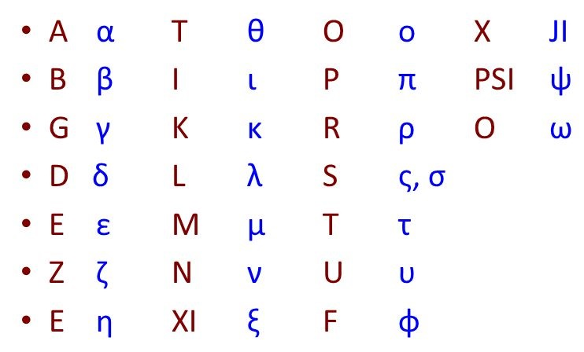

Alfabeto

αι = e
Ει = i
Οι = e
Ου = u
Ευ = ev
γγ=ng
γκ=nc
γξ=nj
γχ=nq
Español
Ayer me dijo un ave que volara
Por donde no hay ardor
Que lo sufrido no resucita en sueños
Ni en rezos nunca murió
Que saque el aire de mis ojos
Que abrace el miedo con tus sueños
Que sea un guerrero de sangre
Para que nadie te haga daño
Ayer me dijo un ave que volara
Hasta desintegrarme
Que la distancia no es cansancio
Es fuerza, eres tú
Transliteración al griego
Αυερ με σιχο ουν αβε κουε βολαρα
Πορ δονδε νο 'αγ αρδορ
Κουε λο σουφριδο νο ρεσουκιτα εν σουενοσ
Νι εν ρεζοσ νουνκα μουριο
Κουε σακουε ελ αιρε δε μισ oχοσ
Κουε αβρακε ελ μιεδο κον τουσ σουενοσ
Κουε σεα ουν γιυερρερο δε σανγρε
Αυερ με διχο ουν αβε κουε βολαρα
'Αστα δεσιντεγραρμε
Κουε λα διστανκια νο εσ κανσανκιο
Εσ φουερζα, ερεσ του